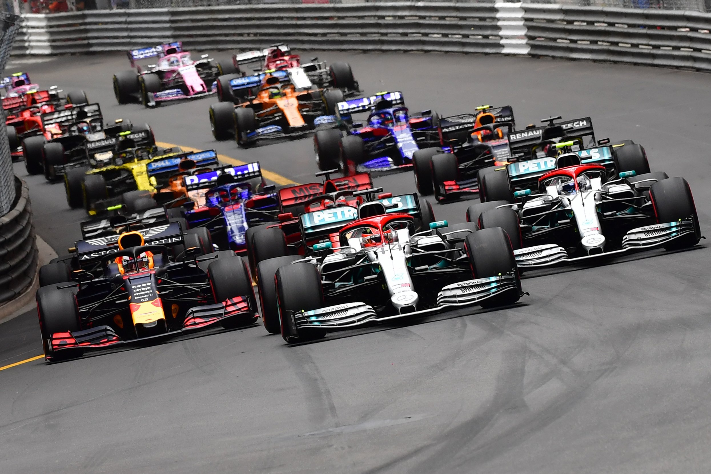

Formula 1 (F1) is the highest class of international single-seater auto racing, sanctioned by the Fédération Internationale de l'Automobile (FIA). It's widely regarded as the pinnacle of motorsport due to its cutting-edge technology, global reach, and elite level of competition.
🔧 What Is Formula 1? Founded: 1950 (First World Championship season) Teams: 10 (as of recent seasons), each with 2 drivers Races: ~24 races per season (called Grands Prix), held across the globe Championships: Drivers' Championship: Awarded to the driver with the most points Constructors' Championship: Awarded to the team with the most combined driver points
🚗 F1 Cars Extremely fast, with speeds over 220 mph (354 km/h) Advanced aerodynamics, hybrid power units, and complex electronics Each team designs its own car (within strict FIA regulations)
🚗 F1 Cars 1. Extremely fast, with speeds over 220 mph (354 km/h) 2. Advanced aerodynamics, hybrid power units, and complex electronics 3. Each team designs its own car (within strict FIA regulations)
👑 Top Teams (Historically & Currently) Ferrari – Most historic team; passionate fanbase Mercedes-AMG – Dominated 2014–2020 era Red Bull Racing – Currently dominant (as of 2023–2024) McLaren, Williams, and Lotus – Historic successes
🧑🔧 Notable Drivers (Past & Present) Michael Schumacher – 7-time world champion Lewis Hamilton – Tied with Schumacher (7 titles) Ayrton Senna – Legendary Brazilian driver Max Verstappen – Current dominant force (as of 2024) Fernando Alonso, Sebastian Vettel, Kimi Räikkönen – Recent icons
ChatGPT said:
Formula 1 uses a variety of flags to communicate important information to drivers during sessions. These flags are essential for safety, regulation enforcement, and race control. Here's a list of the main F1 flags and their meanings:
🟩 Green Flag
Meaning: Track is clear, racing resumes
When Used: After a caution period (e.g., yellow flag), or at the start of a session/sector
🟨 Yellow Flag
Single Yellow: Danger ahead — drivers must slow down and overtaking is not allowed
Double Yellow: Greater danger — be prepared to stop if necessary
When Used: For accidents, debris, or stranded cars on track
🟥 Red Flag
Meaning: Session or race is stopped
When Used: Severe accident, track is blocked or unsafe due to weather or damage
⚫️ Black Flag
Meaning: Driver is disqualified from the session or race
When Used: For serious rule violations or unsafe conduct
⚫️⚪️ Black and White Flag (diagonal)
Meaning: Unsportsmanlike behavior; final warning
When Used: Track limits abuse, aggressive driving, weaving, etc.
Often called the "warning flag"
⚪️ White Flag
Meaning: Slow vehicle on track ahead
When Used: Medical car, safety car, or a driver with mechanical issues
⬛️🟡 Black Flag with Orange Circle ("Meatball Flag")
Meaning: Car has mechanical problem — driver must pit
When Used: For things like loose bodywork, smoke, or fluid leaks
🟩🟨 Yellow and Red Striped Flag
Meaning: Slippery track surface (e.g., oil, water, debris)
When Used: Warns drivers of low grip or changing conditions in that sector
🟦 Blue Flag
Meaning: Faster car approaching — move over to let them pass
When Used: Shown to lapped drivers or those being caught by front-runners
🏁 Checkered Flag
Meaning: End of session or race
When Used: Waved as the lead car crosses the finish line